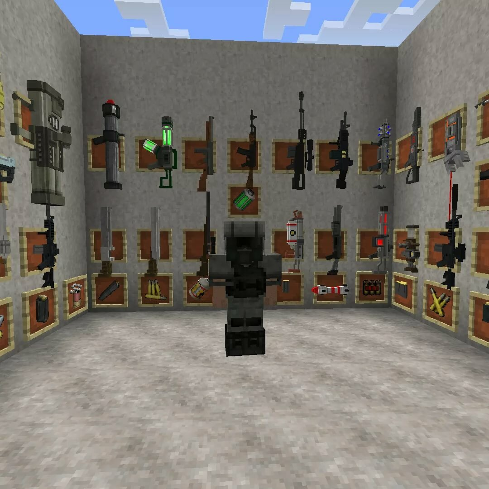
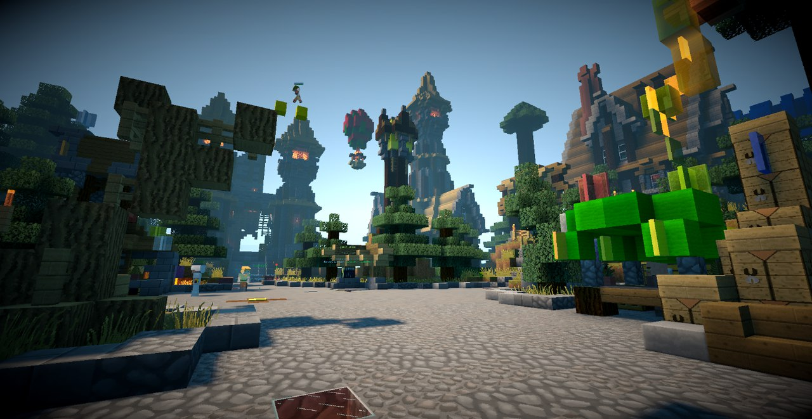
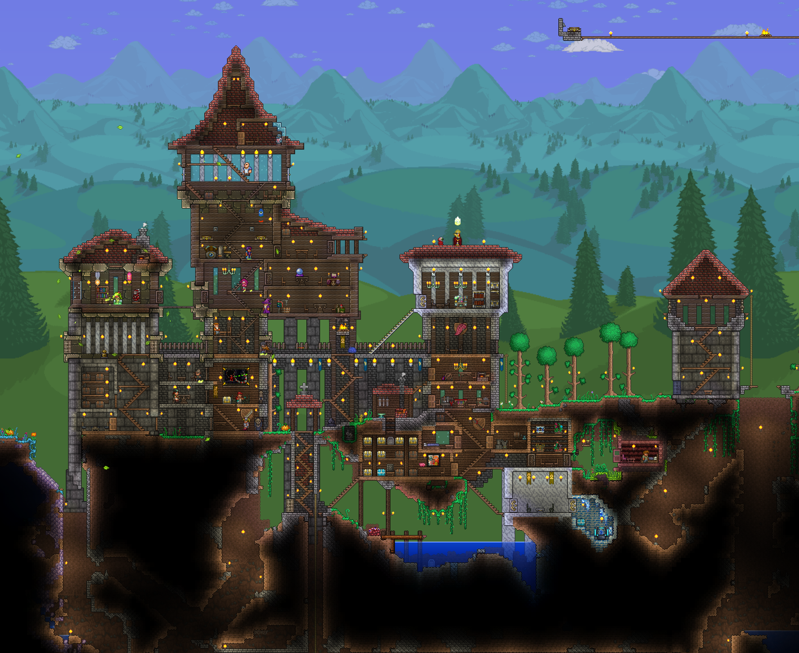
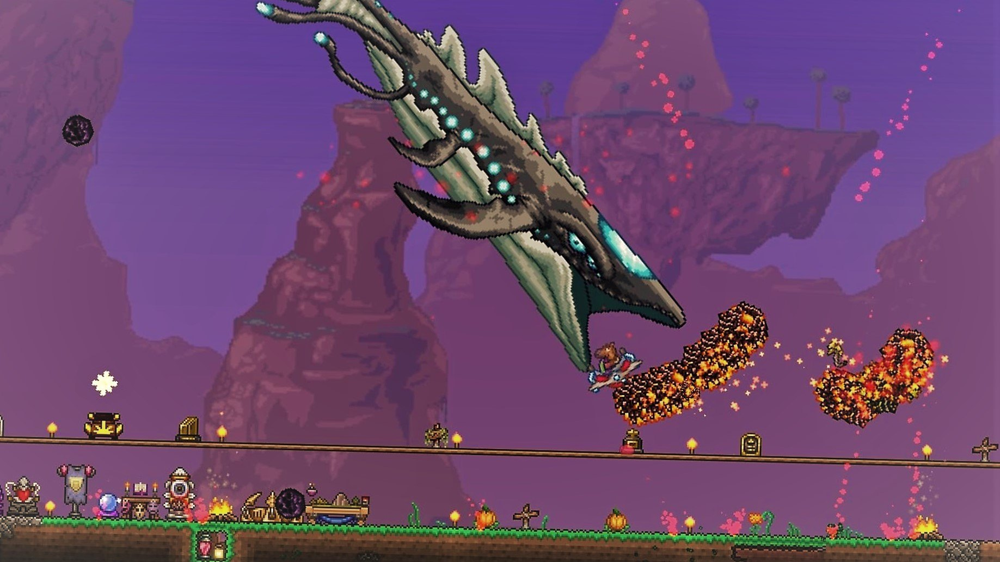
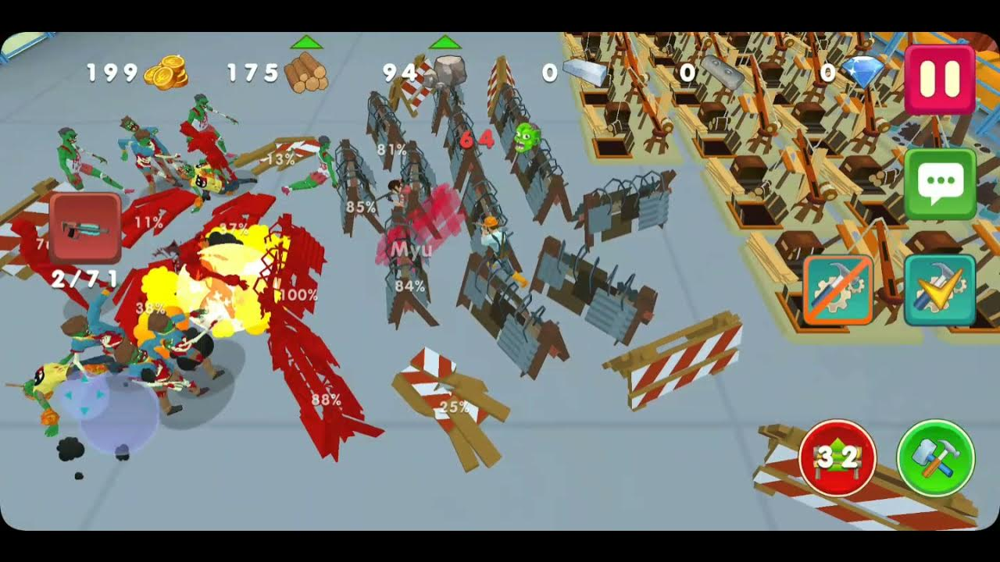
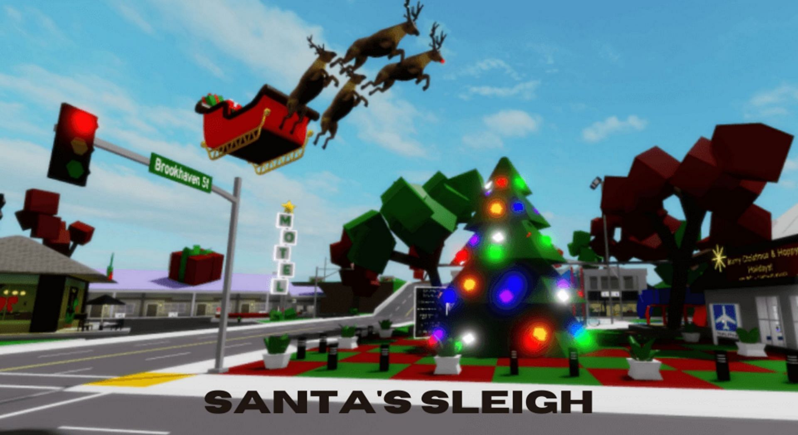
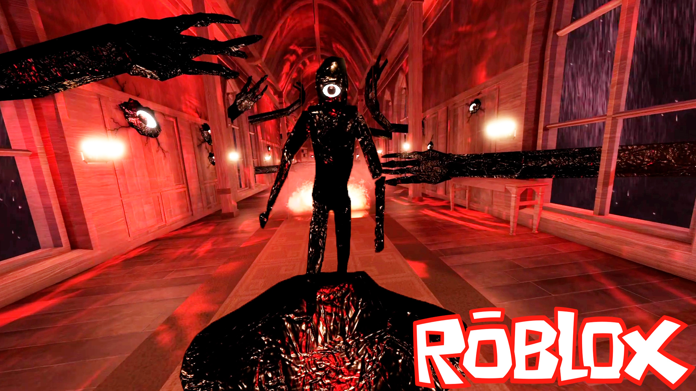
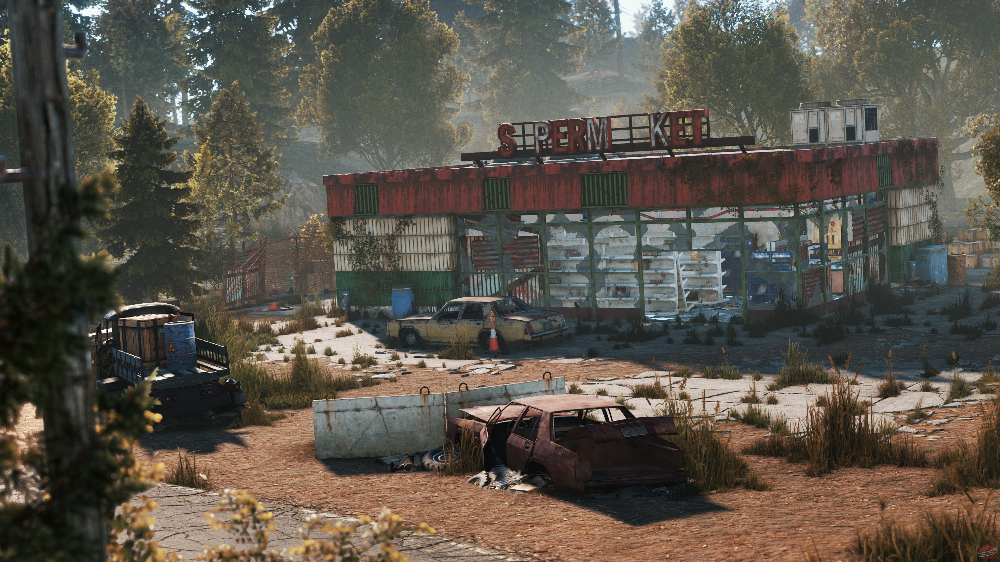
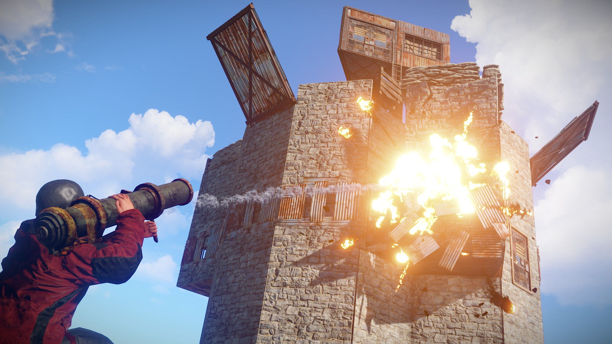

1. Minecraft
⛏️
Это очень разнообразная игра созданная в 2009 году (общедоступный релиз вышел в 2011) По задумке это игра выживание-песочница ты развиваешься в своем мире побеждаешь боссов строишь базы фермы и т.д. НО очень большой плюс этой игры это мультиплеер люди создают сервера и из простой песочницы с помощью команд и строительства создают миниигры, а некоторые игроки программируют моды, плагины для этой игры эти моды очень сильно могут изменить игру. Благодаря этому всему игра Minecraft очень популярна
 2. Terraria
🌳
Эта игра намного сложнее майнкрафта во всем! Там намного больше ресурсов, блоков и т.д. чем в майнкрафте! Почему эта игра не лагает на даже слабых пк? Она в 2д! В ней также есть онлайн, моды, текстуры. Эта игра в стиле выживания и песочницы, вы можете построить все что угодно хоть взорвать весь мир! Может поэтому она мне так нравится...
 3. Two guys and zombies 3D
🧟
Эта игру я нашел очень странным способом... Мы с друзьями хотели поиграть во что-то по сети мы искали игры и нашли вот эту. Эта игра не так популярна как Terraria или Minecraft, но нам она очень понравилась. В "Two guys нужно" с друзьями или одному проходить волны с зомби строить свою базу ставить фермы, покупать оружие чтобы пройти игру нужно дойти до 21 волны на ней будет босс с ~7000 хп, а если играть на сложной сложности то 36000 хп. Эта игра на android
.jpg)
4. Roblox
🚶
Роблокс эта игра в которой ОЧЕНЬ ОЧЕНЬ много разных режимов т.е. очень много игр в одной игре эти игры создают не разработчики, а сами игроки. Если рассказывать про все режимы уйдет вечность, но мои любимые: Doors - хоррор с дверями и монстрами, Hide and seek - прятки на гигантских локациях наверно всё...
 5. Rust
💥
Это шутер-выживание в пост-апокалипстичном мире вы можете очень много всего! Убивать, создавать, ломать, помогать, стрелять, летать, ездить, плавать и т.д. В этой игре надо просто выжить среди игроков можно построить свою базу и защищать ее, а можно постораться приютиться у какого-то клана. Это наверно малая часть всего раста!
 